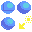
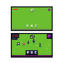

Udemy Pixel Art Course
https://www.udemy.com/course/pixel-art-fundamentals/Fundamental Techniques
Aseprite Shortcuts
- Show timeline: [tab]
- Play animation: [enter]
- Pick color: hold [alt]
- Brush shortcut: [B]
- Onion skin and property
Animation basics
4 frame animations. Show timeline and add frames. Draw each one. Simple as that.
Replicating
Can use animation onion skin to replicate existing sprites slighlty different.

Lines and Curves
When drawing lines, making thick lines by connecting pixels not diagonally as well: `Doubles`
Continuous checkbox in the paint bucket tool: Useful for replacing colors.

Shading
Not just changing color value to make shades. Changing actual hue is better.
Moving color closer to yellow makes it brighter.
Moving color closer to blue makes it darker.

Drawing spheres is about making the specular highlight, back shadow proportional and surface reflection.
Effect can be improved with dithering.
Multiple ways of shading objects. Chair for example.

Highlighting
Similar as shading, use 3D object with similar shape as reference.
Check if there are global reflections or just simple lighting. (e.g. ceiling/floor reflecting)

Dithering
Useful technique to create shading without adding different color levels to the sprite.
Different patterns to create different density of each component color.


Shadows
Good to use more saturated colors (torwards blue) than just grayscale.
Keep in mind object shape and perspective when drawing shadows.
Usually top-down games have shadows straight down. It's an easier perspective to draw.
Outlines
Optional, highlights the object. Can cause it to not feel part of the same world. Use with care.
Simpler outline: Just black color. 1 pixel surrounding object.
Softer outline with darker average color of object part.
Add doubles for sharp edges (e.g. sword tip)

Color Palettes
Same as discussed before: Yellow and dessaturate = Lighter color, Blue and saturate = Darker color.
Possible to create palete from sprite, above the active palette: Options -> Create Palette from Sprite.
Around 4~5 shades of the same color usually do the job.
Cool site with lots of awesome color palettes: lospec.com/palette-list. Export as image and import palette from image.
Small hue-shift - Darker mood, more blended colors. More hue-shift: Vibrant colors, cartoonish feeling.
More blues = More sad, calm or dull. More reds = More agressive, tension, fear.

"Good color" vs "Bad color" challenge.

Rotating Objects
Useful to keep same object size. Copying frames and squishing is a good idea.
Bobbing up/down and scaling shadow makes it look like it's floating.
Camera Angle & Perspectives
Front, side, first-person, isometric
For "first-person" you want to avoid too much perspective. It's facing you.
For isometric, line tool + holding shift to keep angle.
Designing Items
Simplistic Inventory Items
Restricting area to same-size like 8x8 make things easier to design.
Try to keep same style and color palette across the board.
Inventory Items - Rocks
Base form for rock, solid color. Then shade.
Similar to sphere shading. Take into acount concave portions of the rock.
Dithering to make it look less smooth.
Inventory Items - Lumber
Shape, wood under bark, bark shading, detailing.

Designing Weapons
Same as before. Just apply the same techniques.
Try out different materials and reflection types.
Designing Armour
Helmets look a bit more spheric.
Add lighter color to flatter areas.
One more level of highlight color for metallic pieces (Specular).
For inside the helmet, use 1 tone down for every color. Specular is the regular lighting.
Fill in empty spaces with outline color to make the "back" part.
Double edges and highlights to create pointy edges within the object.
UI & HUDs
Icons for Games
Colors must pop. Very saturated colors.
Outline + Shadow
Creating Fonts
Minimalistic font: 3x5 pixels. Add drop shadow for highlight.
Font-size around M letter size (biggest, squarest character).
How to represent characters with few pixels.
UI Buttons
Start out with button shape and color.
Add volume and outline.
Animate by moving 1 pixel down and changing color. Remove drop shadow too.
Designing Health Bars
Multiple health bar styles and materials.
Add shadow to give volume.
It's nice to separate things into layers.
Simulation
Different shapes
Creating a HUD
Position important elements with simple colors first
Combine previous techniques to add detail.
Different type of hud.
Game Assets
Exporting Sprites for Games
File -> Export Sprite Sheet
Export animations horizontally, vertically or in a grid
Customizing Assets
Copying sprites and changing their look slightly to add more variation.
Building a Scene: Layout
Use darker colors for bottom parts. Add shadows and outlines to highlight important objects.
Add a Character
Do not add outline to character feet to make it more connected to the world (ground).
Make child characters by removing one pixel.
Add variation by swapping color palettes.
Add Furniture
Create Decorations
Adding Light
Notice how each different object interacts with light.
Add proper shadows and lights.
Use layers to add transparent color.